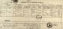
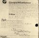
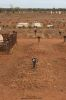
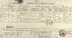

ADDIS, Austinette
-
Name ADDIS, Austinette Born 1833 London, Greater London, England, United Kingdom 
Gender Female Emigration 25 May 1849 - LONDON 25.05.1849 on 'MADAWESKA'
Immigration - PORT ADELAIDE with mother Eleanor ADDIS (nee AUSTIN) and father Jushua ADDIS + 5 siblings.
Unique Id 46567D5610084EB5B26D9AF06BA06DBB6617 Died 1 Jan 1909 Cue, Western Australia, Australia 
Addis, Austinette - Death Certificate
Died in Cue, West Australia as Spencer
Addis, Austinette - Last Will
Made in Bendigo c.1892 as SpencerBuried Cue, Western Australia, Australia - CUE WA Anglican section Grave #413. NB: Her grave is marked Justinette, not Ausinette.

Final stop ... Cue WA
Final stop ... Cue WA!
Plot: 413Person ID I254 Tree One Last Modified 18 May 2021
Father ADDIS, Joshua, b. 1802, d. 28 May, 1877, Beechworth, Victoria, Australia (Age 75 years) Mother AUSTIN, Eleanor, d. 21 May 1877, Beechworth, Victoria, Australia Family ID F422 Group Sheet | Family Chart
Family SPENCER, Arthur William, b. 1827, Norwich, Norfolk, England, United Kingdom , d. 24 Mar 1910, Bendigo, Victoria, Australia (Age 83 years) Married 20 Jan 1854 Melbourne, Victoria, Australia Children + 1. SPENCER, Edwin Addis Culloden, b. 29 Mar 1855, Hobart, Tasmania, Australia , d. 1938, Inglewood, Victoria, Australia (Age 82 years)+ 2. SPENCER, Sydney Charles, b. 1858, Tasmania, Australia , d. Yes, date unknown3. SPENCER, William Francis, b. 1859, Irish Town, Tasmania, Australia , d. 1862, Irish Town, Victoria, Australia (Age 3 years)+ 4. SPENCER, Eleanor, b. 1862, Bendigo, Victoria, Australia , d. 23 Sep 1932, Subiaco, Western Australia, Australia (Age 70 years)+ 5. SPENCER, Arthur Alexander, b. 18 Sep 1863, White Hills, Victoria, Australia , d. 9 Aug 1943, Bayswater, Western Australia, Australia (Age 79 years)6. SPENCER, Francis, b. 1869, White Hills, Victoria, Australia , d. Yes, date unknown+ 7. SPENCER, Herbert, b. 1872, White Hills, Victoria, Australia , d. 2 Jan 1913, Maylands, Western Australia, Australia (Age 41 years)8. SPENCER, Paul, b. 1875, White Hills, Victoria, Australia , d. Yes, date unknown9. SPENCER, Ninth Last Modified 8 Aug 2009 Family ID F71 Group Sheet | Family Chart
-
Event Map  = Link to Google Earth
= Link to Google Earth Pin Legend  : Address
: Address
 : Location
: Location
 : City/Town
: City/Town
 : County/Shire
: County/Shire
 : State/Province
: State/Province
 : Country
: Country
 : Not Set
: Not Set
-
Documents 
Austinette Spencer - Death Certificate 
Austinette Spencer - Last Will and Testament
-
Notes - bur:CUE WA Anglican section Grave #413. NB: Her grave is marked Justinette, not Ausinette.
Dep:LONDON 25.05.1849 on 'MADAWESKA'
Arr:PORT ADELAIDE with mother Eleanor ADDIS (nee AUSTIN) and father Jushua ADDIS + 5 siblings.
Lived 2yrs in Adelaide, 50yrs in Victoria, 3yrs in Tasmania and the last 5 yrs of her life in DAY DAWN and CUE WA. Moved to DAY DAWN prior to 1900 with her disabled son, Herbert, to live with her son Arthur, who was already established there.
- bur:CUE WA Anglican section Grave #413. NB: Her grave is marked Justinette, not Ausinette.